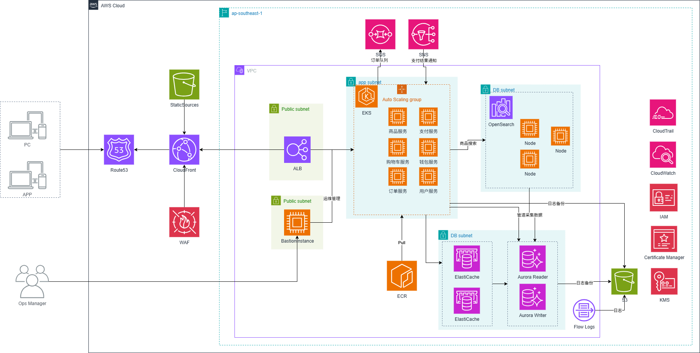

广西锋锐信息技术服务有限公司 | 自营商城平台
1. 项目背景
广西锋锐信息技术服务有限公司是一家中小型创新型企业，现有员工约70人，年营业额约900万美元。自成立以来，公司专注于技术研发与产品创新，业务涵盖多个方向，其中自营商城平台是公司重点发展的板块之一。
该商城平台致力于构建一个公平、透明、安全且高效的自营电商生态。平台专注于自有品牌商品销售，具备高并发处理能力，能够支持海量用户的实时商品浏览、库存查询、订单处理和支付请求，并通过顶级安全防护保障用户交易数据和个人信息安全无虞。同时，平台已实现国际化服务，能够为全球用户提供无缝的购物体验，逐步在全球市场中树立自有品牌知名度。
随着业务的不断扩展，公司计划将成功的自营商城平台从美国市场推广至新加坡市场。然而测试发现，新加坡用户访问美国服务器时存在明显延迟，尤其在大型促销活动和品牌发布会期间，网络波动更为突出。此外，随着海外用户数量的迅速增长，平台在获得市场关注的同时，也遭遇了频繁的网络攻击与DDoS攻击，对系统运行和用户购物体验造成了影响。
基于以上背景，我们建议采用亚马逊云计算技术构建自营商城平台：通过弹性伸缩以适应促销高峰、以多层安全保障客户数据与隐私，并通过自动化与标准化提升运维效率与系统稳定性。
2. 项目目标
- 降低访问延迟：在 AWS 新加坡区域部署 EKS 集群，显著提升新加坡及周边地区的访问速度，尤其在活动高峰期保持顺畅体验。
- 增强安全性：引入 AWS Shield 与 WAF，有效抵御各类网络攻击和 DDoS 攻击，保障交易与支付流程安全稳定。
- 提升业务可用性：通过 ELB 与多可用区的 EC2/EKS 部署，消除单点故障，确保核心业务持续稳定。
- 优化性能与成本：使用 Auto Scaling 按需伸缩 EKS NodeGroup 规模，并结合 Reserved Instances 与成本工具优化TCO。
- 持续技术支持：在 AWS 与点一云团队支持下，建立例行评估与改进机制，快速响应新场景与新需求。
3. 项目架构图

架构要点：EKS 工作负载、ALB 暴露服务、Aurora 主从、ElastiCache 缓存、OpenSearch 检索、WAF/Shield 防护、多可用区与自动扩缩容等
4. 项目成果
- 显著降低访问延迟：在新加坡区域部署后，页面加载与下单响应明显加速，满意度与留存率提升。
- 安全性增强：WAF+Shield 组合抵御约 95% 的常见网络攻击与DDoS威胁，数据与交易更安全。
- 高可用保障：ELB + 多可用区 EKS 架构将服务可用性提升至 99.9% 级别，活动高峰依然稳定。
- 性能与成本优化：Auto Scaling 保障高并发稳定响应，Reserved Instances 等策略显著降低云成本。
- 持续改进能力：建立性能评估与安全审计机制，持续优化，快速适配业务增长与市场扩张。